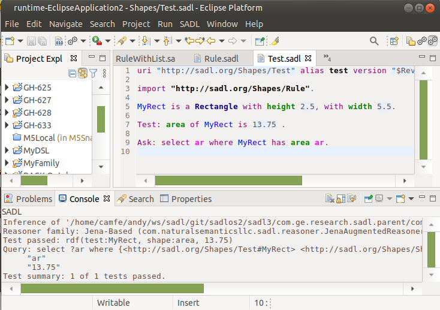

Test Model is a user command that can be executed in the
context of a selected SADL model file or in the context of a selected test
suite file. The command can be activated from the menu bar's SADL dropdown
menu when in the SADL perspective, as shown below.
Test Model may also be selected from the SADL tool bar icon.
If the currently selected file in the IDE is a .sadl file, that file must contain at least one command statement, e.g., Ask, Test, etc. Upon execution of the Test Model commend on a valid SADL model, inference will be run on the model to create an inferred model. If the selected SADL model does not contain any command statements, an inferred model is not created. Once created, the inferred model is used to process the command statements, ie. to run queries, run tests, etc., with the results being displayed in the console window. The screen capture below shows a model with a Test statement and an Ask statement. The results of running Test Model are displayed in the console window.
If the currently selected file in the IDE is a test suite (a .test file), the file should contain one or more Test statements with the URI of a SADL model as object of the test. The referenced SADL model should contain one or more Test statements. The screen capture below shows a test suite referencing three SADL models. The results of running Test Model is shown in the console window. Note that one test in the suite failed.